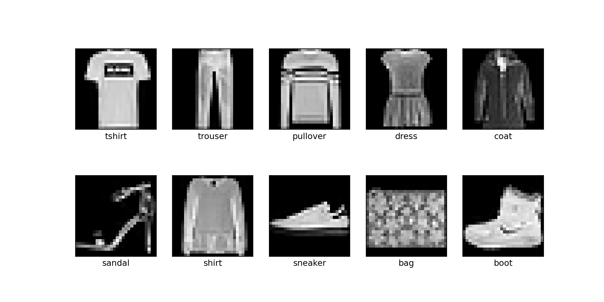
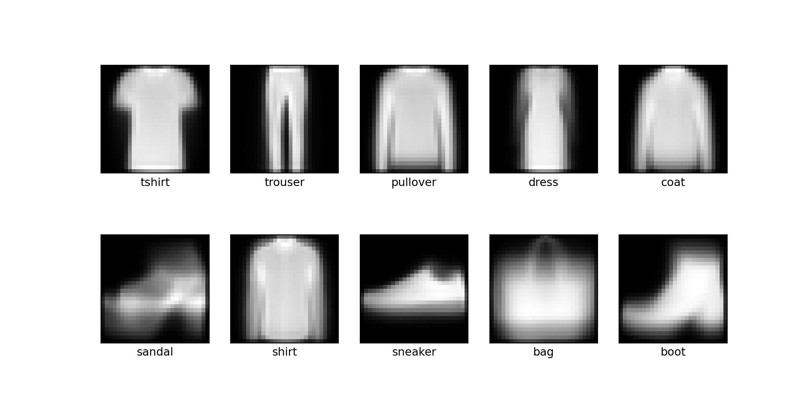
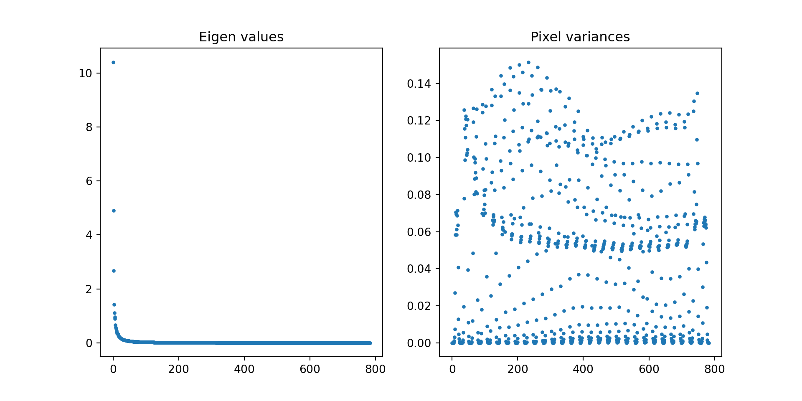
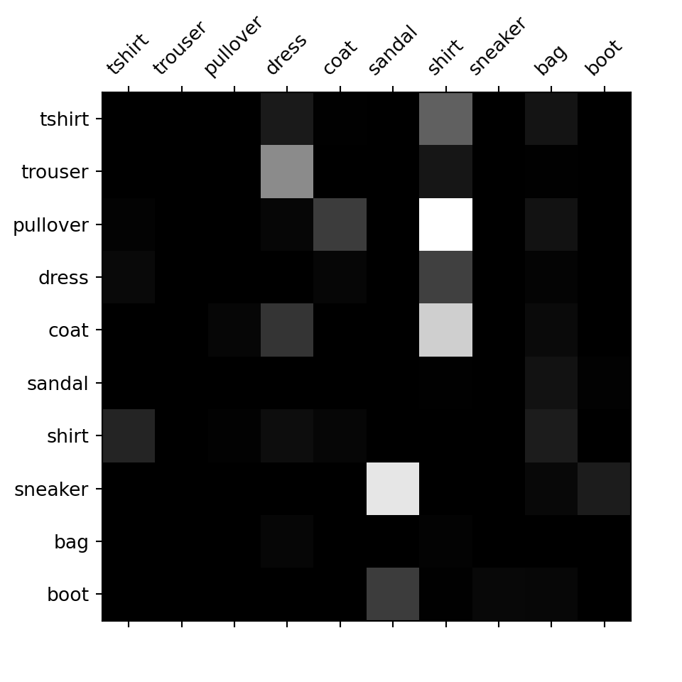
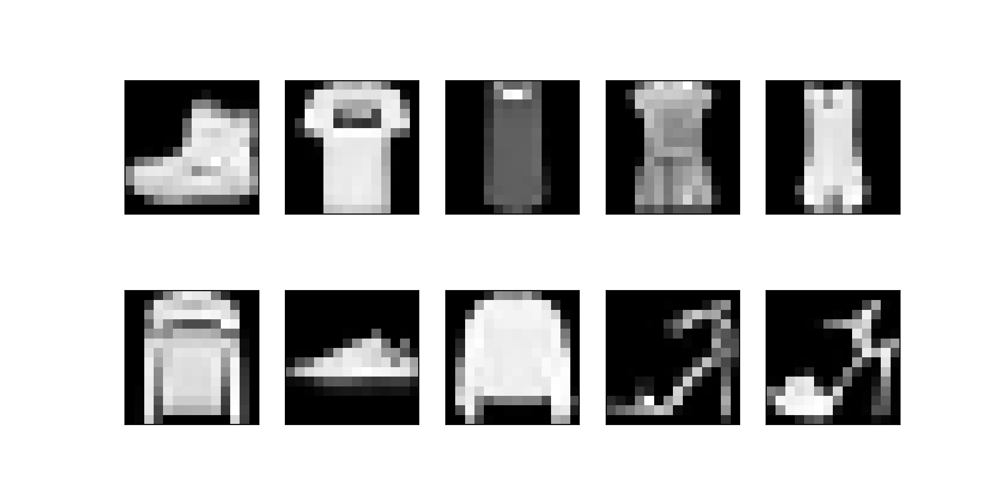

The third chapter in Hands-On Machine learning with Scikit-learn, Keras and
Tensorflow
concerns classification. More precisely the majority of the chapter concerns
evaluation of classification models. While a very important subject it does not
make for much of a project to just reiterate different ways to estimate model
performance. So, I thought it would make for a nice project to show that you do
not always need machine learning to create an image classification model that
can perform (reasonably) well. I will be using the fashion-MNIST dataset. It
was created to replace the MNIST dataset containing handwritten digits
(sometimes termed the “hello world” of machine learning) as benchmarking data
for ML algorithms. The fashion-MNIST is a bit more difficult than the
original and not as overused. So let’s start by importing it from keras.
It contains 60k training and 10k testing 28x28 images. The labels
are integers from 0-9 and represents different classes of clothing, which
can be seen in the code below.
import pandas as pd
import numpy as np
import matplotlib.pyplot as plt
import tensorflow as tf
from tensorflow import keras
fashion_mnist = keras.datasets.fashion_mnist
(train_X, train_y), (test_X, test_y) = fashion_mnist.load_data()
train_X = train_X / 255
test_X = test_X / 255
train_X = train_X.reshape(60000, 28*28)
test_X = test_X.reshape(10000, 28*28)
class_names = ['tshirt', 'trouser', 'pullover', 'dress', 'coat', 'sandal', 'shirt', 'sneaker', 'bag', 'boot']Here we do two important things. First, since the observations are images the pixel intensities are represented in values between 0-255. We normalise them by division of the maximum pixel intensity. Then, after loading the data, the images are represented in a 3D array where each slice represents a single image. However, we are going to use classification based on Gaussian likelihood, treating the images as high dimensional observations from a multivariate Gaussian distribution - disregarding their spatial structure. Therefore we transform them into vectors, each row in a 2D array representing one image. In the plot below you can see the first instance of each class in the training data:
plt.figure(figsize=(10, 5))
for i in range(10):
plt.subplot(2, 5, i+1)
plt.xticks([])
plt.yticks([])
plt.grid(False)
plt.imshow(train_X[train_y == i, :][0].reshape(28,28), cmap = 'gray')
plt.xlabel(class_names[i])
plt.show()
When using maximum likelihood to estimate parameters (given some assumed distribution and observed data) we are saying: which parameters of this distribution would maximise the likelihood that we have observed the data we have observed? In this case we have ten \(28*28 = 784\) dimensional distributions, assumed to be Gaussian, one for each class of clothing. The maximum likelihood estimators of a multivariate Gaussian, are the sample mean vector and the sample covariance matrix:
\[ \hat \mu = \frac{1}{m} \sum_{i=1}^m \mathbf{ x^{(i)} } = \mathbf{\bar{x}}, \ \text{and} \ \hat \Sigma = \frac{1}{m} \sum_{i=1}^m \mathbf{(x^{(i)} - \hat \mu) (x^{(i)} -\hat \mu)}' \]
You can derive these estimators by using the log likelihood function and taking the derivative w.r.t. each parameter and then equating to zero. If these parameters are known the log likelihood of an observed vector (image in this case) is the log of the probability density function: \[ lnL(\boldsymbol{x}) = -\frac{1}{2}\left[ln|\Sigma| + (\boldsymbol{x}-\boldsymbol{\mu})'\Sigma^{-1}(\boldsymbol{x}-\boldsymbol{\mu}) + m \ ln(2\pi) \right] \]
However, since we do not know the population parameters we use their estimations, i.e. the sample mean vector and sample covariance for each class. So, in the code below I create a dictionary in which I save the mean vector of each class (i.e. for each class I take the column mean). Then I do the same but for the covariance matrix – that is I calculate the covariance between each pixel in the images of a certain class:
mu_hat = {}
for i in range(10):
mu_hat[format(class_names[i])] = np.mean(train_X[train_y == i], axis=0)
cov_hat = {}
for i in range(10):
cov_hat[format(class_names[i])] = np.cov(train_X[train_y == i], rowvar = False)Let’s see what an average clothing item looks like!
plt.figure(figsize=(10, 5))
for i in range(10):
plt.subplot(2, 5, i+1)
plt.xticks([])
plt.yticks([])
plt.grid(False)
plt.imshow(mu_hat[format(class_names[i])].reshape(28,28), cmap = 'gray')
plt.xlabel(class_names[i])
plt.show()
However, the log likelihood does not directly depend on \(\Sigma\), rather it depends on the determinant \(|\Sigma|\) and the inverse \(\Sigma^{-1}\). This is rather problematic for our purposes because many pixels are almost perfectly collinear because they are almost always zero (i.e. they have no variance, as seen in the plot below). When this happens some eigenvalues of the covariance matrix become negative and the covariance matrix is no longer positive semi-definite. Similarly, since the determinant of a matrix is the product of it’s eigen values, if one eigen value is zero the determinant will be zero and the matrix singular (non-invertible). Look for example at the eigen values of the covariance matrix for the “dress” class and variances for the pixels:
s2=np.diag(cov_hat["dress"])
w, v = np.linalg.eig(cov_hat["dress"])
plt.subplot(1, 2, 1)
plt.scatter(range(len(w)), np.real(w), s=5)
plt.title("Eigen values")
plt.subplot(1, 2, 2)
plt.scatter(range(len(s2)), np.real(s2), s=5)
plt.title("Pixel variances")
plt.show()
This is never theoretically a problem, but practically we need to deal with it to get the log likelihood function to work. I chose to deal with it by calculating the pseudo determinant, which is the product of all non-zero eigen values and the pseudo inverse (Moore-Penrose inverse), a generalisation of the normal inverse. However, I only do this if the determinant of the covariance matrix is below 0.000001, otherwise I calculate the normal determinant and inverse. The inverse of a covariance matrix is often referred to as the precision.
def precdet(Sigma, threshold):
deter = np.linalg.det(Sigma)
if deter < 1e-06:
w, v = np.linalg.eig(Sigma)
deter = np.product(np.real(w[w > threshold]))
precision = np.linalg.pinv(Sigma)
else:
precision = np.linalg.inv(Sigma)
return precision, deter
Note that when calculating the pseudo determinant I cannot take the product of all eigen values that are strictly > 0. This is because we have 784 eigen values, and if the majority are below 1 we will end up with an extremely small number, very close to 0, which will introduce all the problems we are trying to avoid anyway. Here I chose the threshold 0.5 for including an eigen value in the calculation of the determinant. This is admittedly an arbitrary threshold but I found it to work out pretty well for these data. The code below calculates the determinant and the precision from the covariance matrix for each class and stores them in a dictionary.
prec_deter = {}
for i in range(10):
prec_deter[format(class_names[i])] = precdet(cov_hat[class_names[i]], 0.5)
Now to the actual classifier! If I would not have had the problem with
singularity I could have taken the log of the inbuilt numpy function for the
multivariate Gaussian PDF, like so:
ll = np.log(multivariate_normal.pdf(x, mean = mu, cov = Sigma)). However, this
function does not allow using the precision directly and would not calculate
the pseudo determinant, so we would not get proper estimations. Therefore, I
define the log likelihood in the code below that takes an observation (an image
reshaped into a vector), the mean vector, precision and determinant calculated
for each class and returns the log likelihood of this 784 dimensional
observation:
def llGaussian(x, mu, precision, deter):
ll = -0.5*(np.log(deter) + np.dot(np.dot(x-mu, precision), x-mu) + (len(mu)*np.log(2*np.pi)))
return ll
Then I define a classifier that calls the above function and calculates the likelihood of an observation coming from each possible class and returns the label of the class with the highest likelihood:
def classmle(x):
ll=np.zeros(10)
for i in range(10):
ll[i] = llGaussian(x, mu_hat[class_names[i]],
prec_deter[class_names[i]][0],
prec_deter[class_names[i]][1])
return np.argmax(ll)Let’s try it out on the means of each class!
for i in range(10):
print("Predicted:", class_names[classmle(mu_hat[class_names[i]])],
"| True:", class_names[i])
## Predicted: tshirt | True: tshirt
## Predicted: trouser | True: trouser
## Predicted: pullover | True: pullover
## Predicted: dress | True: dress
## Predicted: coat | True: coat
## Predicted: sandal | True: sandal
## Predicted: shirt | True: shirt
## Predicted: sneaker | True: sneaker
## Predicted: bag | True: bag
## Predicted: boot | True: bootPhew! It got all of them correct. If it hadn’t, something would probably have been off since they are supposed to be the centroid of each class. Now it’s time to make some predictions!
train_pred = np.apply_along_axis(classmle, 1, train_X)In the code above, for each row (an image) in the 2D array train_X I apply the
function classmle and predict which class it belongs to and save the predictions
in the vector train_pred. Let’s look at some
model performance. When we are dealing with multiclass classification, the best
way to visualise performance is with a confusion matrix, where you set the
classes both as rows and columns and all correctly classified observations are
represented in the diagonal. A perfect classifier would only have values > 0 on the
diagonal. Plotting this as a heatmap makes for a nice way of getting a feel for
problematic classes etc. But to make sure that no class gets unfairly
represented because of relative size, we need to normalise the matrix by
dividing each row by the sum of that row, note that we also set the diagonal to
0, to make the off-diagonals more visible:
#### Model performance
from sklearn.metrics import confusion_matrix
cm = confusion_matrix(train_y, train_pred)
row_sums = cm.sum(axis=1, keepdims=True)
norm_conf_mx = cm / row_sums
np.fill_diagonal(norm_conf_mx, 0)
plt.matshow(norm_conf_mx, cmap = 'gray' )
plt.xticks(list(range(10)), class_names, rotation = 45);
plt.yticks(list(range(10)), class_names);
plt.show()
Here, all rows represent true classes and all columns represent predictions. So, for example, true images of tshirts gets misclassified shirts and shirts gets misclassified as tshirts, but not really to the same extent. We can also see that several classes are categorised as shirt because a large portion of the column is lit, however, since the row for shirt is fairly dark, the model seems to be able to classify that category correctly. Classifying sneaker as sandal seems to be the most common error of the model. Let’s look at the total accuracy (that is the sum of correct classifications divided by the number of classifications), and the accuracy of each class:
acc_train = np.mean(train_pred == train_y)
print("Training accuracy: ", round(acc_train, 3))## Training accuracy: 0.796for i in range(10):
print(class_names[i], round(np.mean(train_y[train_y == i] == train_pred[train_y == i]), 3))## tshirt 0.8
## trouser 0.776
## pullover 0.525
## dress 0.884
## coat 0.62
## sandal 0.968
## shirt 0.88
## sneaker 0.632
## bag 0.984
## boot 0.894A total training accuracy of 0.796! This is perhaps not a model we would put in production but it is far better than chance (which would produce an accuracy of 0.10). And remember that this is achieved without any model tuning (or in other terms: machine learning). So, how does it perform on the test set?
test_pred = np.apply_along_axis(classmle, 1, test_X)
acc_test = np.mean(test_pred == test_y)
acc_test## 0.7243A test accuracy of 0.724 seems reasonable given the training accuracy. The slight drop in accuracy is kind of expected since the model has not seen this data before. However, if there are ways we could improve the training accuracy of the model that would have been worth looking into before moving on to using the test data. One method of doing so would be to use some kind of dimensionality reduction. One should never make adjustments to a model after having looked at the test data but since this is a toy project, let’s see what happen if we reduce dimensionality by applying an averaging filter.
Note! You cannot look at the test data and then tune your model!
This can be done in several ways, for example if we want to downscale the images by using local averaging we can apply a filter that iterates over the image, returning only the mean from the specified area. E.g if we want to downsize to a 14x14 pixel image we apply a 2x2 kernel that takes the mean of this area:
n = 10 #input number of observations to filter
nset = train_X[range(n)].reshape(n, 28, 28)
reim = np.zeros((14, 14))
blur_train_X = np.zeros((n, 14, 14))
for k in range(n):
for i in range(14):
for j in range(14):
image = nset[k]
reim[i, j] = np.mean(image[(2*i):(2*i+2), (2*j):(2*j+2)])
blur_train_X[k] = reim
plt.figure(figsize=(10, 5))
for i in range(10):
plt.subplot(2, 5, i+1)
plt.xticks([]);
plt.yticks([]);
plt.grid(False);
plt.imshow(blur_train_X[i], cmap = 'gray');
plt.show()
However, this is a very slow approach and the type of downscaling we want has
already been implemented in the function downscale_local_mean from the image
processing module scikit-image. So let’s perform the downscaling on
all images using this function instead:
from skimage.transform import downscale_local_mean
filt_size = 2
im_resize = 14
resTrain_X = np.empty([train_X.shape[0], im_resize, im_resize])
resTest_X = np.empty([test_X.shape[0], im_resize, im_resize])
for i in range(resTrain_X.shape[0]):
resTrain_X[i, :, : ] = downscale_local_mean(train_X.reshape(train_X.shape[0], 28,28)[i, :, :], (filt_size, filt_size))
for i in range(resTest_X.shape[0]):
resTest_X[i, :, : ] = downscale_local_mean(test_X.reshape(test_X.shape[0], 28,28)[i, :, :], (filt_size, filt_size))
resTrain_X = resTrain_X.reshape(resTrain_X.shape[0], im_resize*im_resize)
resTest_X = resTest_X.reshape(resTest_X.shape[0], im_resize*im_resize)Then do all of the steps that we previously did:
mu_hat = {}
for i in range(10):
mu_hat[format(class_names[i])] = np.mean(resTrain_X[train_y == i], axis=0)
cov_hat = {}
for i in range(10):
cov_hat[format(class_names[i])] = np.cov(resTrain_X[train_y == i], rowvar = False)
prec_deter = {}
for i in range(10):
prec_deter[format(class_names[i])] = precdet(cov_hat[class_names[i]], 0.1)
resTrain_pred = np.apply_along_axis(classmle, 1, resTrain_X)
#### Model performance
cm = confusion_matrix(train_y, resTrain_pred)
row_sums = cm.sum(axis=1, keepdims=True)
norm_conf_mx = cm / row_sums
np.fill_diagonal(norm_conf_mx, 0)
acc_train = np.mean(resTrain_pred == train_y)
plt.matshow(norm_conf_mx, cmap = 'gray' )
plt.xticks(list(range(10)), class_names, rotation = 45);
plt.yticks(list(range(10)), class_names);
plt.show()print("Training accuracy: ", round(acc_train, 3))## Training accuracy: 0.772for i in range(10):
print(class_names[i], round(np.mean(train_y[train_y == i] == resTrain_pred[train_y == i]), 3))## tshirt 0.784
## trouser 0.815
## pullover 0.561
## dress 0.884
## coat 0.605
## sandal 0.972
## shirt 0.717
## sneaker 0.509
## bag 0.982
## boot 0.89The fact that the classification based on these reduced images is slightly worse than when performed on the raw would mean that if this was a real project we would have chosen the model based on the full data.
resTest_pred = np.apply_along_axis(classmle, 1, resTest_X)
acc_test = np.mean(resTest_pred == test_y)
print("Testing accuracy: ", round(acc_test, 3))## Testing accuracy: 0.753However, looking at the performance on the test data, we see that it actually performs better than the full model. This might indicate that the full model slightly overfit the training data.
So, to sum up: in this blog post I have shown how you can create an image classification model without using any fancy techniques. The model even performs fairly well given that we’re not even taking the structural relationships of the pixels into account. I have also demonstrated that reducing dimensionality might help to protect against overfitting.